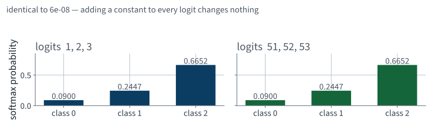
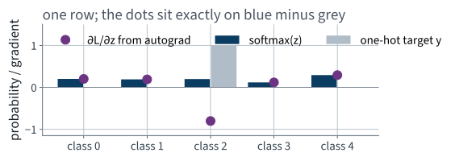
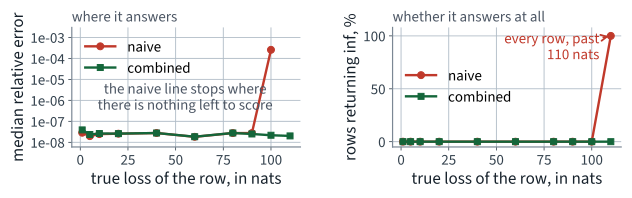
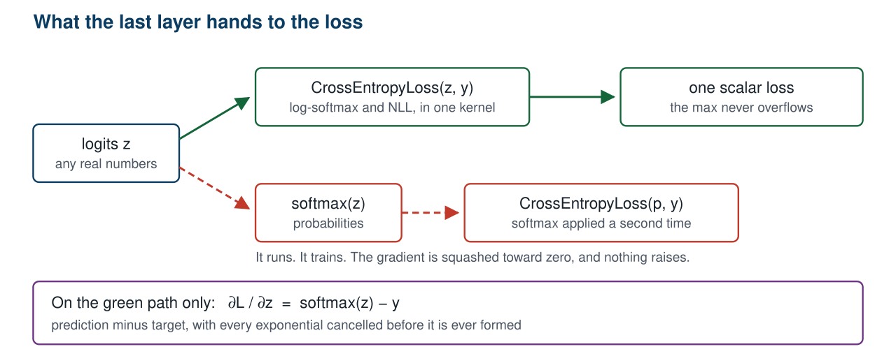
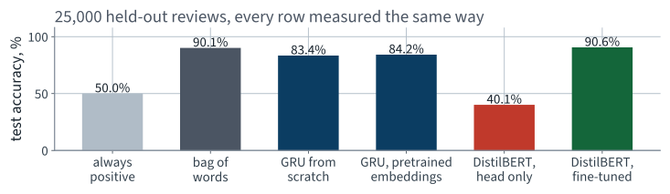
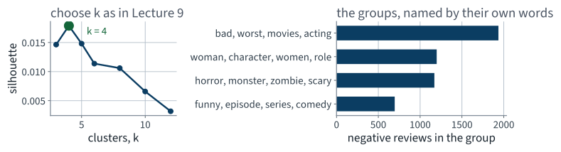
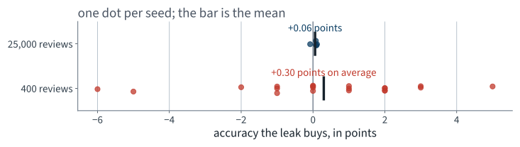

Application 11 · IMDb film reviews
Lecture 22 · Fix Thread 11 Géron Ch. 14–15
Applications of Machine Learning
BSc Mathematics of Artificial Intelligence · Third year
| Model | Test accuracy |
|---|---|
| Always one class | «pct1:l21_majority» |
| tf-idf + logistic regression | «pct1:l21_bow.bigram.acc» |
| GRU from scratch | «pct1:l21_scratch_acc» |
| GRU, pretrained embeddings | «pct1:l21_pretrained_acc» |
Borrowing one tensor was worth «f2:l21_swap_gain_points» points.
Today: what happens if you borrow all of them.
Mathematical thread 11
20 minutes
Your model's last line was
return self.head(torch.cat([h[0], h[1]], dim=1)) # (B, 2)
Two unbounded real numbers per review. No softmax anywhere. You handed them
to nn.CrossEntropyLoss and it worked.
The output of the last linear layer, before anything is done to it.
That last point is worth holding on to. Logistic regression is this construction with $K = 2$ and one difference.
The map from $K$ unbounded numbers to a probability vector:
The third point already tells you that
argmax does not need it. A prediction never requires softmax.
One line:
So softmax is not injective. The map from logits to probabilities loses exactly one dimension — the constant direction $\mathbf{1}$ — and there is no way to recover it.

The two panels agree to «g:l22_softmax.max_shift_diff». Not approximately: the same numbers.
The function ignores the shift. float32 does not.
inf; the ratio becomes nannan propagates into every parameter through
backward()
>>> z = np.array([1000., 1001., 1002.], dtype=np.float32)
>>> np.exp(z)
array([inf, inf, inf], dtype=float32)
>>> np.exp(z) / np.exp(z).sum()
array([nan, nan, nan], dtype=float32)
>>> np.exp(z - z.max()) / np.exp(z - z.max()).sum()
array([0.09003057, 0.24472848, 0.66524094], dtype=float32)
Same function, three different results, and the difference is one subtraction that the mathematics says changes nothing.
Shift invariance is not a curiosity about the formula. It is the licence to do this, and without it there would be no numerically safe softmax.
Between a target distribution $\mathbf{y}$ and a predicted $\mathbf{p}$:
A hard label is one-hot — $y_c = 1$, the rest 0 — so every term but one dies:
| $p_c$ | $-\log p_c$ | Reading |
|---|---|---|
| 1.00 | 0.00 | certain and right |
| 0.50 | 0.69 | a coin, on two classes |
| 0.10 | 2.30 | wrong, and not yet confident about it |
| 0.01 | 4.61 | wrong and certain — unbounded penalty |
$-\log$ is what makes confident mistakes expensive. A loss linear in $p_c$ would price the last two rows almost the same.
On two balanced classes, an untrained model should show a loss near 0.69. If your first epoch starts far from that, something is wrong before any training has happened.
Substituting softmax into the loss and using $\log\frac{a}{b} = \log a - \log b$:
The exponential of the true class has cancelled.
That is not a simplification for the slide — it is the whole reason the combined form is the one implemented. Hold on to it for four slides.
The first term contributes only when $k = c$:
The second is the log-sum-exp, whose derivative is softmax:

The dots are what PyTorch computed. The bars are what the algebra predicts. They agree to «g:l22_gradient.max_abs_error».
z = torch.randn(7, 5, dtype=torch.float64, requires_grad=True)
y = torch.randint(0, 5, (7,))
loss = nn.CrossEntropyLoss(reduction="sum")(z, y)
loss.backward()
analytic = torch.softmax(z.detach(), 1) - one_hot(y, 5)
assert (z.grad - analytic).abs().max() < 1e-10
reduction="sum" because the mean divides every
gradient by the batch size, and then the assertion fails for a reason that has
nothing to do with the mathematics. That trap is worth meeting once.
Because of the cancellation on slide 14.
If it took probabilities
Form every exponential, divide, and then take the logarithm of a number that may be $10^{-40}$.
Taking logits
One pass, with the maximum subtracted inside the log-sum-exp. The exponential and the logarithm never meet.
And the gradient falls out as $\mathbf{p} - \mathbf{y}$ without differentiating through the division.
Two ways to compute the same loss in float32, scored against a
float64 reference:
# naive: probabilities first
p = np.exp(z) / np.exp(z).sum(1, keepdims=True)
naive = -np.log(p[rows, y])
# stable: the combined form
m = z.max(1, keepdims=True)
stable = -(z[rows, y] - (m[:, 0] + np.log(np.exp(z - m).sum(1))))
2,000 rows of 10 logits at each of nine scales, from a standard deviation of 1 to 400.
float32 gives up
The naive form is already losing digits at ordinary logit magnitudes, and stops returning a number at all past the dashed line.
z = [100., 0., -100.] float32, true class = 2
| Computed as | Loss |
|---|---|
| float64 reference | «f4:l22_stability.example_exact» |
| naive, probabilities first | «str:l22_stability.example_naive» |
| combined, from logits | «f4:l22_stability.example_stable» |
The numerator $e^{-100}$ underflows to «str:l22_stability.example_naive_numerator» and the denominator $e^{100}$ overflows to «str:l22_stability.example_naive_denominator». Their ratio is not a number, and neither is its logarithm. The combined form never forms either.
nn.CrossEntropyLoss()(torch.tensor([[100., 0., -100.]]), torch.tensor([2]))
agrees with the float64 reference to
«g:l22_stability.torch_agrees».
log_softmax, logsumexp or
binary_cross_entropy_with_logits, the fusion is the point. It
is not a convenience wrapper.

Both paths run. Only one of them computes the loss you wrote down.
Shannon entropy of a distribution — the average surprise of a draw from it:
Kullback–Leibler divergence — how much worse you do by coding draws from $\mathbf{y}$ as if they came from $\mathbf{p}$:
Non-negative, zero only when the two agree, and not symmetric.
Add and subtract $\sum_k y_k \log y_k$. That is the entire proof.
With a label-smoothed target — 0.9 on the true class, the remaining 0.1 spread over four others — the entropy is no longer zero:
| Quantity | Value |
|---|---|
| $H(\mathbf{y})$ | «f4:l22_kl.smooth.H» |
| $D_{\mathrm{KL}}(\mathbf{y} \Vert \mathbf{p})$ | «f4:l22_kl.smooth.KL» |
| $H(\mathbf{y}) + D_{\mathrm{KL}}$ | «f4:l22_kl.smooth.H_plus_KL» |
| $H(\mathbf{y}, \mathbf{p})$ | «f4:l22_kl.smooth.CE» |
Identical to «g:l22_kl.residual». The constant is «f4:l22_kl.smooth.H», it does not depend on the model, and that is why it can be dropped.
Point 3 returns in thread 12, where the contrastive objective is a cross-entropy over similarities.
Part two
20 minutes · score the sheet, then find the bug
Accuracy the desk would need: %
Accuracy I expected from my model: %
Best accuracy I obtained: %
| Reality | Test accuracy |
|---|---|
| Counting words | «pct1:l21_bow.bigram.acc» |
| Your recurrent network | «pct1:l21_scratch_acc» |
Score them out loud. Ask specifically who wrote a number below the bag of words, and how they felt about it at the time.
A reasonable request. The desk did ask for a confidence. Read what comes back before the next slide, with thread 11 fresh.
def forward(self, x, lengths):
e = self.emb(x)
packed = nn.utils.rnn.pack_padded_sequence(
e, lengths.cpu(), batch_first=True, enforce_sorted=False)
_, h = self.rnn(packed)
logits = self.head(torch.cat([h[0], h[1]], dim=1))
return torch.softmax(logits, dim=1) # probabilities
# ... unchanged
loss = nn.CrossEntropyLoss()(model(xb, lb), yb)
It runs. The output is a valid probability vector. The loss decreases every epoch. The accuracy is above the majority class.
nn.CrossEntropyLoss applies log_softmax to its
input. Its documentation says so in one line, and nothing raises if you have
already applied one.
Softmax of a softmax. The input to the second one lives in $[0, 1]$, so its logits differ by at most 1, and the output is squashed toward uniform.
On two classes the widest possible gap after the first softmax is $1 - 0 = 1$, so the second softmax can never produce a probability above $e / (e + 1) \approx 0.731$ — however certain the model is.
By thread 11 the gradient with respect to the second softmax's input is $\mathbf{p}' - \mathbf{y}$, and that has to be pulled back through the first softmax, whose Jacobian carries a factor of order $p(1-p)$.
| Same architecture, same seed, same four epochs | Final training loss | Test accuracy |
|---|---|---|
| Logits into the loss | «f4:l21_runs.word_random.train_loss.3» | «pct1:l21_scratch_acc» |
| Probabilities into the loss | «f4:l22_double_softmax.train_loss.3» | «pct1:l22_double_softmax.test_acc» |
«f2:l22_double_softmax_cost» points
Look at the loss column first. It sits above 0.3 and stops, exactly where the algebra said it would — and that is the tell, not the accuracy.
forward returning logits, because
CrossEntropyLoss applies its own log-softmax. Add a separate
predict_proba that applies softmax, used only at inference.
Assert that the untrained model's loss on balanced classes is within 0.05 of
log 2.”
The assertion costs one line and catches this, a mislabelled target, and a head with the wrong number of outputs.
forward. Training
consumes logits; inference applies softmax if a probability is wanted; the
prediction never needs it at all, because softmax is order-preserving.
The same error in its other costume: BCELoss
after a sigmoid, when BCEWithLogitsLoss exists. Same cancellation,
same overflow, same silence.
With that bug fixed we are back to «pct1:l21_scratch_acc», and the diagnosis from slide 28 stands.
We borrowed the first layer. The question is why we stopped there.
Part three
35 minutes
| Text seen | Labels seen | |
|---|---|---|
| Our GRU | «int:l21_n_fit» reviews | «int:l21_n_fit» |
| A pretrained language model | billions of words | 0 |
The pretrained model never saw a sentiment label. It learned English by predicting missing words in ordinary text, which needs no annotation at all — so the corpus can be as large as the internet.
Exactly the argument of Lecture 16, in a different modality: the expensive thing is the representation, and someone else has already paid for it.
A recurrent layer reaches position 200 by passing a state through 199 steps. Attention reaches it in one.
| Recurrent | Attention | |
|---|---|---|
| Path between two positions | up to «int:l21_maxlen» steps | 1 |
| Representation of a token | one vector per token, plus state | depends on the whole sentence |
| Positions processed | one at a time | all at once |
The third row is why these models could be trained on billions of words at all: the recurrence is inherently sequential and the attention is one matrix product.
Chapter 15 develops this properly. Today we use it.
| Property | Value |
|---|---|
| Parameters | «int:l22_finetune.n_params» |
| Vocabulary — the same one we used last lecture | «int:l21_oov.subword_vocab» |
| Embedding width | 768 |
| Pretraining task | predict masked words |
Last lecture we took «int:l21_oov.subword_vocab» × 768 numbers out of this model and threw the rest away. The rest is where the language is.
from transformers import AutoModelForSequenceClassification
model = AutoModelForSequenceClassification.from_pretrained(
"distilbert-base-uncased", num_labels=2)
# every weight is pretrained EXCEPT the classification head, which is random
opt = torch.optim.AdamW(model.parameters(), lr=2e-5)
lossf = nn.CrossEntropyLoss() # logits in, as always
Run the same backbone with its untrained head and no fine-tuning at all:
| Model | Test accuracy |
|---|---|
| Pretrained body, random head, no training | «pct1:l22_zeroshot.acc» |
| Always one class | «pct1:l21_majority» |
Measured on «int:l22_zeroshot.n» test reviews. The pretraining on its own predicts nothing about sentiment — it has no idea what the two output units are supposed to mean. Everything that follows is what one pass of fine-tuning does with a representation it did not have to build.
| Setting | Value |
|---|---|
| Reviews used to fine-tune | «int:l22_finetune.n_fit» |
| Epochs | «int:l22_finetune.epochs» |
| Batch size, learning rate | «int:l22_finetune.batch», 0.00002 |
| Training wall clock | «f0:l22_finetune.train_seconds» s |
| Scoring «int:l21_n_test» test reviews | «f0:l22_finetune.test_seconds» s |
Measured on an Apple MPS backend, in
float32. Comparable to the from-scratch GRU's
«f0:l21_runs.word_random.seconds» seconds, for a model 25 times larger —
attention parallelises and recurrence does not.
| Model | Test accuracy |
|---|---|
| Always one class | «pct1:l21_majority» |
| tf-idf + logistic regression | «pct1:l21_bow.bigram.acc» |
| GRU from scratch | «pct1:l21_scratch_acc» |
| GRU, pretrained embeddings | «pct1:l21_pretrained_acc» |
| DistilBERT, fine-tuned | «pct1:l22_finetune_acc» |
«f2:l22_gain_over_scratch» points over the model you built, and «f2:l22_gain_over_bow» over the bag of words.

Five of the six bars are on the same 25,000 held-out reviews, with the same metric, computed by the same function.
| Model | Reviews misclassified, out of «int:l21_n_test» |
|---|---|
| GRU from scratch | «int:l22_errors_scratch» |
| DistilBERT, fine-tuned | «int:l22_errors_finetuned» |
«pct0:l22_error_drop»
of the mistakes removed. Percentage points flatter a model near the top of the range; the error count is the number the desk actually cares about, because each one is a review someone has to fix by hand.
| Changed | Unchanged |
|---|---|
| the whole model, not just the table | the corpus, the split, the metric |
| attention instead of recurrence | the loss — still logits in |
| a much smaller learning rate | the training loop, line for line |
| one epoch instead of four | the evaluation function |
Every row on the right is a decision you do not have to re-make when the model changes. That is what the discipline of Part I bought.
“Find me the ones like this one.”
“And tell me what people keep complaining about.”
Neither is classification. Both fall out of the same pretrained models, because what those models produce is a representation, and a label was only ever one thing to do with it.
Search, then grouping. Fifteen minutes, and no training at all.
m = AutoModel.from_pretrained("sentence-transformers/all-MiniLM-L6-v2")
tk = AutoTokenizer.from_pretrained("sentence-transformers/all-MiniLM-L6-v2")
enc = tk(texts, truncation=True, max_length=256, padding=True,
return_tensors="pt")
out = m(**enc).last_hidden_state # (B, T, 384)
mask = enc["attention_mask"].unsqueeze(-1).float()
vec = (out * mask).sum(1) / mask.sum(1) # mean over REAL tokens
vec = torch.nn.functional.normalize(vec, dim=1) # onto the unit sphere
Line 8 is last lecture's padding bug in its other
costume. Divide by out.shape[1] instead of by
mask.sum(1) and every short review is scaled toward zero.
On the unit sphere the dot product is the cosine:
Normalisation onto the sphere returns as the first line of thread 12, where it is doing rather more work.
sims = query_vec @ corpus_vecs.T # (1, N) cosine similarities
top = np.argsort(-sims[0])[:3]
«int:l22_search.n» negative reviews, embedded once in «f0:l22_search.seconds» seconds, «int:l22_search.dim» dimensions each. No index, no training, no labels.
Query: “«str:l22_query.1»”
Nearest by keyword overlap — tf-idf cosine «f3:l22_search.hits.1.keyword_top_sim.0»:
“«str:l22_keyword_text.1»”
Of the three reviews each method returns for that query, the two lists share «int:l22_search.hits.1.overlap_at_3» of three.
It also fails differently. Cosine similarity has no notion of negation, so the sound was perfect and the sound was not perfect sit close together. Do not deploy this without measuring it on your own queries.
Cluster the «int:l22_search.n» negative reviews in the same embedding space. This is Lecture 9, unchanged — k-means, and the choice of $k$ by silhouette rather than by eye.
for k in (3, 4, 5, 6, 8, 10, 12):
km = KMeans(n_clusters=k, n_init=10, random_state=42).fit(V)
print(k, silhouette_score(V, km.labels_, sample_size=3000,
random_state=42))
The vectors are on the unit sphere, so Euclidean k-means and cosine k-means order the same points the same way.

The silhouette is low in absolute terms — complaint text does not fall into well-separated balls — and the groups are still legible.
| Reviews | Terms most characteristic of the group |
|---|---|
| «int:l22_clusters.groups.0.size» | «str:l22_cluster_terms.0» |
| «int:l22_clusters.groups.1.size» | «str:l22_cluster_terms.1» |
| «int:l22_clusters.groups.2.size» | «str:l22_cluster_terms.2» |
The terms are not the cluster centres. They are the words whose average tf-idf weight is highest inside the group relative to outside it — a group is named by what makes it different, not by what is common everywhere.
«int:l22_clusters.best_k» groups in total, chosen by a silhouette of «f4:l22_best_silhouette».
| They asked for | They get |
|---|---|
| a complaint flag | «pct1:l22_finetune_acc» accurate, «f0:l22_finetune.test_seconds» s for «int:l21_n_test» reviews |
| “find me ones like this” | cosine search over «int:l22_search.n» vectors |
| “what recurs” | «int:l22_clusters.best_k» groups, each named by its own words |
Three deliverables, one pretrained representation, and one afternoon. None of the three required a labelled example of the thing being asked for except the first.
Part four
15 minutes
Under-specified in the same place as Lecture 1's, and this time the object being fitted is not a scaler. Read the code and name what is fitted, and on what.
vec = TfidfVectorizer(min_df=1, ngram_range=(1, 2))
X = vec.fit_transform(all_texts) # every document
y = all_labels
X_tr, X_te, y_tr, y_te = train_test_split(
X, y, test_size=0.25, random_state=42, stratify=y)
clf = LogisticRegression(max_iter=2000, C=4.0).fit(X_tr, y_tr)
print(f"accuracy {(clf.predict(X_te) == y_te).mean():.3f}")
It runs, it splits, it never fits the classifier on test rows, and it reports a plausible number.
TfidfVectorizer.fit learns two things from the documents it is
given, and both come from the test rows here:
The same experiment at two corpus sizes, because the answer depends on the size and that is the lesson:
Leaky and honest are run on identical splits with identical seeds, so the difference is the leak and nothing else.

Two corpora, the same three lines of code, and two different verdicts.
| Corpus | Leaky | Honest | Difference |
|---|---|---|---|
| «int:l22_leak.full.n_docs» reviews | «pct2:l22_leak.full.leaky_mean» | «pct2:l22_leak.full.honest_mean» | «f2:l22_leak.full.gap_points» pts |
| «int:l22_leak.small.n_docs» reviews | «pct2:l22_leak.small.leaky_mean» | «pct2:l22_leak.small.honest_mean» | «f2:l22_leak.small.gap_points» pts |
On the small corpus the leak wins on «int:l22_leak.small.seeds_leak_wins» of «int:l22_leak.small.seeds» seeds, with a standard deviation of «pct2:l22_leak.small.gap_sd» across seeds — so quoting a single seed here would tell you almost nothing.
The same shape as Lecture 1's scale-before-split leak, worth about a dollar, and Lecture 12's per-batch mean, worth 0.382 accuracy points. Three leaks, three small numbers, one rule.
One that no pipeline can protect you from: the same document in both halves of the split. On a scraped corpus this is the normal case, not the pathological one.
norm = lambda s: " ".join(s.lower().split())
train_norm = set(norm(s) for s in train_x)
dupes = sum(1 for s in test_x if norm(s) in train_norm)
| On the official IMDb split | Count |
|---|---|
| Test reviews also present in training | «int:l22_dupes.train_test_dupes» |
| Duplicate reviews within training | «int:l22_dupes.within_train_dupes» |
Clean, on this corpus, because its authors deduplicated it. Three lines to check, and you now know rather than assume.
Swap notebooks with the team beside you. Ten minutes.
forward return logits, or probabilities?Name the failure mode and give it a number to disbelieve. Generic review requests return generic praise.
| Failure | Diagnosed in | Measured cost |
|---|---|---|
| Scaler fitted before the split | Lecture 2 | about a dollar |
| Accuracy under class imbalance | Lecture 4 | a useless model above 90% |
Missing zero_grad() | Lecture 12 | 76.7 points |
| Random split on a time series | Lecture 20 | an unreproducible score |
| Summarising at the padded last position | Lecture 21 | «f2:l21_padding_cost_points» points |
| Softmax before the loss | today | «f2:l22_double_softmax_cost» points |
| Vectoriser fitted before the split | today | «f2:l22_leak.small.gap_points» points at «int:l22_leak.small.n_docs» docs |
Against the desk's own criterion: «int:l22_errors_finetuned» reviews out of «int:l21_n_test» are routed wrongly, and nobody sees them again. Whether that is acceptable depends on what happens to a missed complaint, and we have not asked.
The model is not the deliverable. The routing decision is.
| From | Still true |
|---|---|
| Lecture 1 | compute the trivial baseline, and a serious one, before committing |
| Lecture 2 | split first; fitted objects see training rows only |
| Lecture 9 | choose $k$ by silhouette, not by eye |
| Lecture 10 | PCA when a representation is wider than the slot it must fit |
| Lecture 12 | own the loop; a metric is counted over the set |
| Lecture 16 | a pretrained representation beats a bigger architecture |
transformers library, the model hub, and the specific
checkpoints used today. Examinable: subword tokenisation, embeddings,
attention and the transformer block, fine-tuning a pretrained model,
sentence embeddings and their use for retrieval and clustering — all
of Chapters 14 and 15.
Also outside the book, and worth one sentence: the models used today are small by current standards, and everything in this lecture applies unchanged to models a thousand times larger, with a different bill.
| Topic | Chapter |
|---|---|
| Cross-entropy and softmax output layers | 3, 9 |
| Sentiment analysis, subword tokenisation | 14 |
| Reusing pretrained embeddings and models | 14 |
| Attention and the transformer architecture | 15 |
| Fine-tuning a pretrained language model | 15 |
| k-means and silhouette scores | 8 |
Lecture 23 · Build
The entries are images and the queries are text
You will encode both, discover the two spaces are unrelated
and need a reason why one training objective fixes it
Bring a fresh commitment sheet